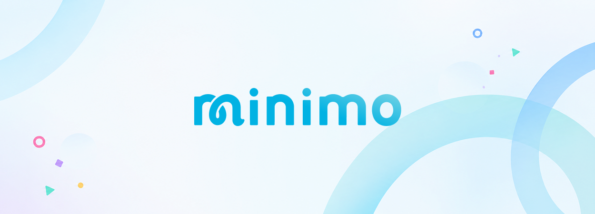
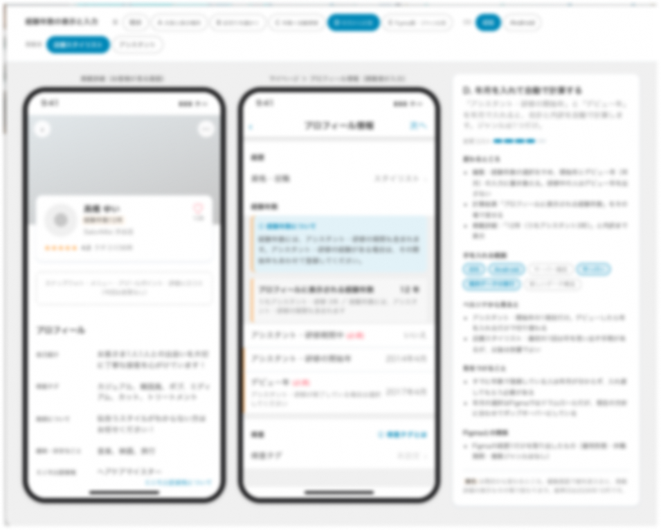
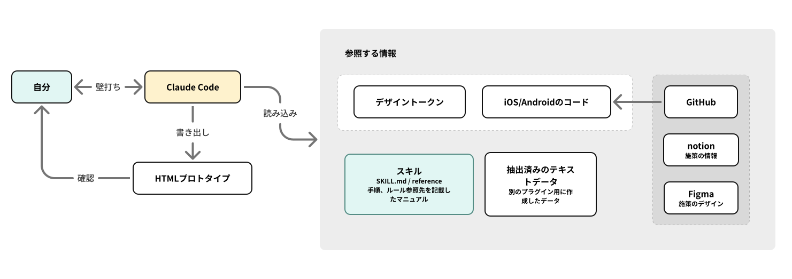
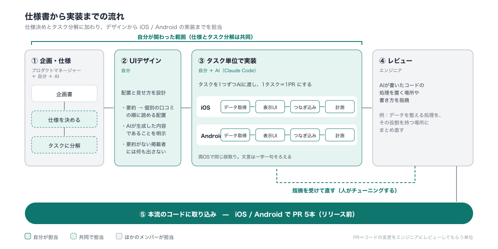
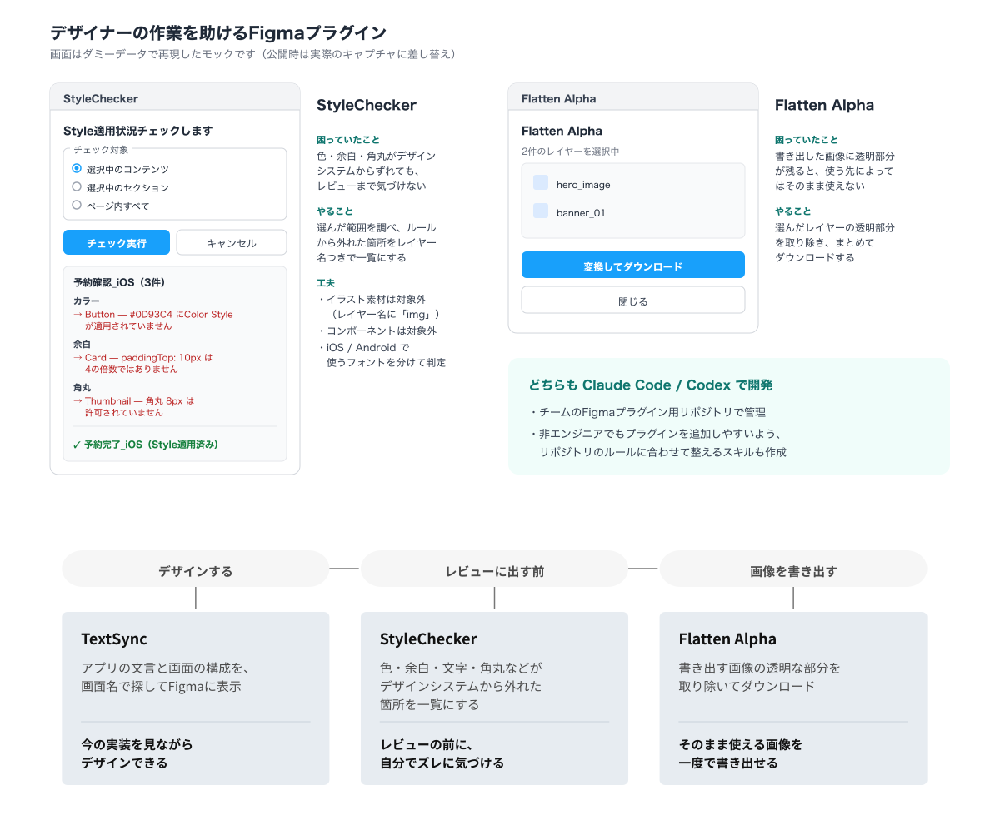

AIとの向かい合い、取り組み、検討

概要
AIを導入し始めた2026年当初はプラグイン作成から始まり、Claude Codeが導入されてからはskillsの作成にハマる。その後はアプリのクライアント開発を実施
AIをとりあえず使うのは難しいので、良き隣人として日々の業務での伴奏の仕方・業務効率を上げられないかを業務内で検討。
- - 期間：2026年3月〜（継続中）
- - 役割：UIデザイン、施策の仕様決め・タスク分解（プロダクトマネージャーと共同）、iOS / Androidアプリ側の実装、スキル・ツールの設計と実装、チームへの展開
- - プロダクト：美容サロン予約サービス（iOS / Android）
- - 使用ツール：Claude Code / Codex / Figma / SwiftUI / Jetpack Compose
- - 成果物：HTMLプロトタイプ、AI口コミ分析のデザインと両OSの実装、デザイナー向けスキル集、Figmaプラグイン
取り組み、検証
AIが当たり前になってきたことで、UIやグラフィックでそれらしいものは作れるようになったと思うが、抱える課題や解決したいことは組織や事業によって異なる
そのため本稿では、まずはAIを用いた業務効率化が図れるところへのテコ入れ・チームでの課題解決・個人での取り組みから開発へのしみだしについて記載する

① コードを正としたデザインとの突き合わせ、検討案のプロトタイプ作成
弊事業部では施策でデザインを作成する際は、すべてをAIには委ねていない。現状では、アイディア出しの段階やインタラクションの確認などが主な使われ方
ここでは、本番コードとデザイントークンを用いて、本番環境に経験年数表示の施策では、HTMLプロトタイプを複数案作成して比較し、施策のデザイン作成の効率化を検討したプロトタイプの検討
デザインデータがない画面はコードを正とし作成。実際のコードやデザインシステムを参照したHTMLプロトタイプを用意、施策の検討段階から動きや画面構成を比較していく
実装の事実をデザインの手元にそろえる
「今の画面がどうなっているか」はFigmaではなく、本番アプリのコードを正とするルールを設定。AIがコードから読み取った現状と、今回変更したい提案を分けて示すことで、事実とアイデアが混ざらないようにしました。
背景に、事業部にはマスターデータにあたるものが充実しておらず、全体仕様をFigma上から確認できないため、実機での表示やコードを正としていたためです
- プロトタイプ作成スキル：対象ペルソナと課題を自分で定義し、AIが本番コードとデザインシステムを読んでHTMLプロトタイプを生成
- 施策ではスキルを使って8つの案を作成し、比較検討した


②デザイン作成から実装、リリースまで
AI活用の作業染み出し案件。「AI口コミ分析」は、掲載者への口コミをAIが要約して表示する新機能。サーバー側の準備は進んでいた一方、アプリ側の実装が未着手のまま止まっていた。。プロダクトマネージャーと仕様を決め、UIデザインからiOS / Androidのアプリ側の実装までを担当
口コミセクションのUIデザイン、仕様を決めて実装できる単位に分ける
総合評価の直後、個別の口コミの手前に要約を配置。「まず全体の傾向をつかみ、気になれば個別の口コミを読む」という情報の順番にしました。AIが生成した内容であることを注意書きで示し、要約がない掲載者には何も表示しない仕様としています。
チームで採用している、企画から仕様・タスクまでを文書化して進める開発方式に沿い、プロダクトマネージャーと共同で仕様を決め、実装可能な単位にタスクを分解
- 分解したタスクを1つずつAIに渡して実装し、1タスクを1つのPR（コード変更をレビューする単位）
- 「データの受け取り → 表示UI → 画面へのつなぎ込み」の順で、両OSとも同じ段取りで進める
- 表示回数の計測も実装し、文言は両OSで一字一句そろえるなど、プロジェクトのルールに沿って実装


エンジニアのレビューで仕上げる
AIが書いたコードは動作しても、処理を置く場所や書き方がプロジェクトの設計方針に合わないことがありました。レビューの指摘を受け、データを整える処理を本来の役割を持つ場所にまとめ直し、既存コードの書き方に合わせて修正しました。
両OSで計5本のPRがレビューを経て本流のコードに取り込まれました。AIで実装を終わらせるのではなく、既存の設計やコードベースに合う品質まで仕上げる工程を重視しました。
③チームの仕組みにする
デザイナー向けスキル集を立ち上げる
Claude Codeのスキルは、AIに渡す業務マニュアルです。手順やルール、参照する情報の正を明確にしておくことで、誰が依頼しても共通の手順と基準で作業を進めやすくなります。デザイナーが会話しながら結果を確かめ、判断の一助とする。
2026年6月にデザイナー向けのスキル集を立ち上げ、非エンジニアでも迷わない言葉で導入手順を整備。その3週間後には別のデザイナーがデザイン系スキルを7件追加し、全13件
作成したものはリポジトリで管理
リポジトリで管理するスキル（6件）
デザイナーの作業を助けるFigmaプラグインを作る
日々の作業で手間がかかるところやミスが起きやすいところを、Claude Code / Codexでプラグインにしました。自分でデザインシステムとのズレを確認できるようにすることや、繰り返しの作業を減らすことを目的としています。
- StyleChecker：色・線・文字サイズ・余白・角丸がデザインシステムの値やスタイルに沿っているかを確認し、外れている箇所を一覧表示
- Flatten Alpha：画像書き出し時に透明部分を取り除き、そのまま使える形でダウンロード
- プラグインを追加しやすいように、スキルとあわせて管理リポジトリのルールも整備

④社内登壇、AIを使うって難しいよね、、と題して社内登壇
資料は面接時などに
結果
- デザイン段階で本番実装の事実を参照できるようになり、実装前にズレを確認するための材料をそろえられるようになった
- 「AI口コミ分析」で仕様決めからUIデザイン、iOS / Androidのアプリ側実装までを担当し、止まっていた機能の実装を完了
- 自分が立ち上げたスキル集に別のデザイナーも参加し、全13件に拡大
- 両OSで計5本のPRがレビューを経て本流のコードに取り込まれた
- Figmaプラグインを3種作成し、デザイン確認や素材書き出しなどの日々の作業を支援